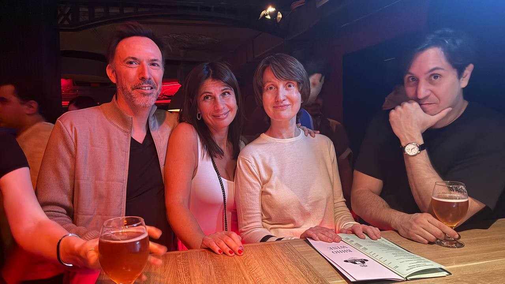

Every Thursday evening a long table fills up in a bar near Smolenskaya, and by nine o'clock you can hear English, French, Italian and Russian around it. The group calls itself Moscow AfterWork — an international crowd that finishes the working day, orders a drink together and simply talks. 🥂
There is no host with a topic list, no timer, no rounds. When a newcomer asked what the format was, the organiser answered: "We meet up around a few drinks — that's 100% casual Thursday AfterWork." People arrive straight from the office, stay for an hour or until closing, and leave with a few new contacts in their phone.
It started in January 2025 and passed 500 members in July 2026. The organiser is French and describes the mood as "French touch, Russian spirit" 🇫🇷🇷🇺 — expats, Russians who work with foreigners, and people who have just landed in Moscow, all in the same room.
Our Format
Format: a weekly after-work drinks meet-up in a bar, not a lesson. You pay at the door, get a welcome drink and mingle — that's the whole programme.
- 🍸 Every Thursday from 19:00 until around 1 a.m. — come when work lets you, leave when you like
- 🌍 No level requirement — none is ever mentioned. English is the common language, and French, Italian and Russian go round the table too
- 👋 Newcomers every week — "new comers are very welcome" appears in almost every announcement, and first-timers get a hello in the group by name
- 🥂 25–30 people at the current venue, indoors in winter and on the terrace in summer
Where we meet
| Day | Venue | Address |
|---|---|---|
| Thursday, 19:00–01:00 | Bruxelles Pub 🍻 | Smolenskaya Street, 8 — m. Smolenskaya |
The venue moves. Over the past year the club has run at New York Restaurant & Bar near Kurskaya, at Sur / Сюр by Kitay-Gorod, and at Relict Restaurant (Debri bar, Smolenskaya Street 6) before settling at Bruxelles Pub at the end of May 2026. A fresh post with the address goes out in the group every week — check it before you set off.
There is also a password at the door, announced in the group with each weekly post. Say it and you're in.

Special Formats
🎳 Beyond Thursdays
Thursdays are the backbone, but the community spills into the weekend: Sunday bowling, poker nights, Sunday brunches, and in June 2026 a garden party outside Moscow with barbecue, volleyball, tennis and a sauna. These are announced in the group and places are limited — message the organiser if you want in.
Price
1000 ₽ at the door, which includes a welcome drink — a glass of champagne or a soft drink. Everything after that is your own bar tab.
Coming as a group? Message the organiser beforehand — every announcement ends with "PM for groups". There have also been 500 ₽ evenings for first-timers and for members who bring one along.
Registration
No sign-up form and no lesson plan — join the Telegram group, read Thursday's post for the venue and the password, and just show up. The bar holds about 30 people, so if you're bringing colleagues or friends, write to the organiser in advance so he can hold the table.
- Club group: join Moscow AfterWork on Telegram
- Organiser: Telegram @Margincall2 — message him for groups and for weekend events
See you on Thursday! 🍀